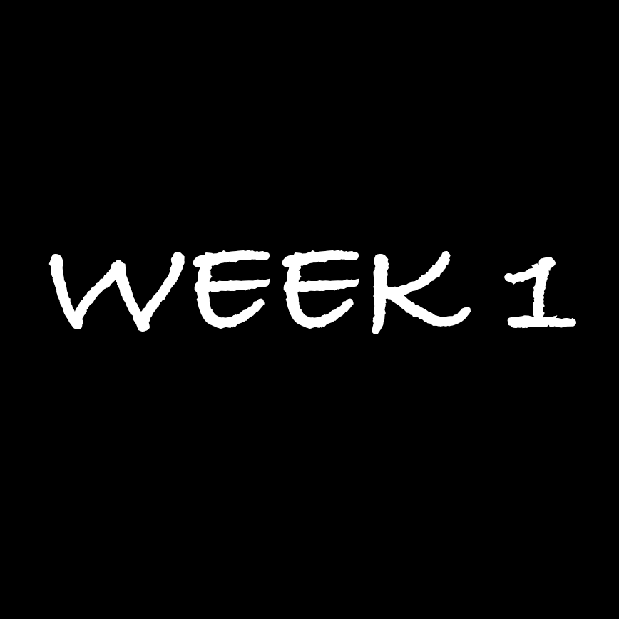
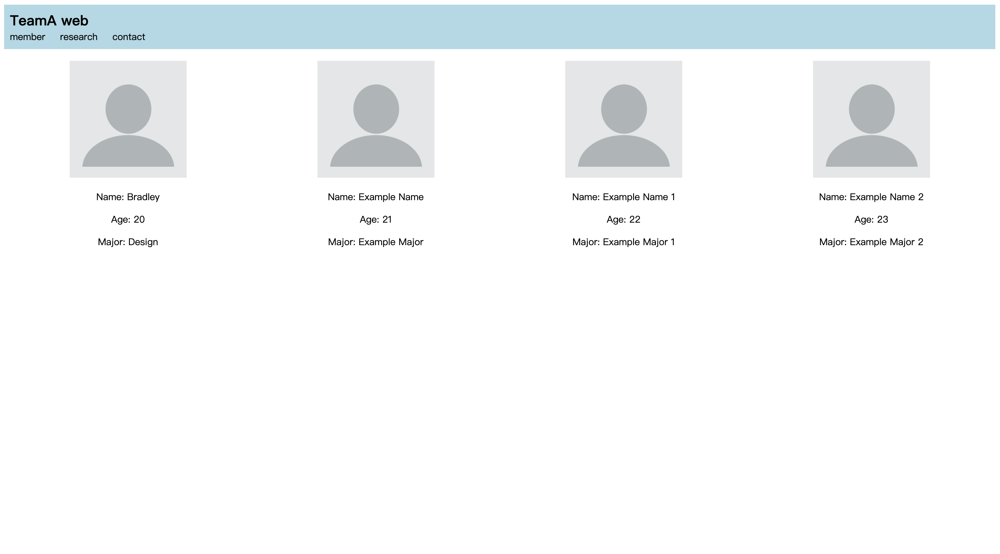

WEEK 1
In the first week of the course we learned about the definition of Interactive Media, the interaction of sense and nonsense and some of the synesthetic design.
We also completed the download of the vs code and did a couple of activities related to html and interactions.

We started with a gesture activity, where each person wrote down three gestures from their lives on slips of paper,
and then made the others guess what was on the randomly given slips of paper through a performance.
Then we had a paper coding activity where we were divided into two groups and first sketched a website on paper,
then the members competed to build this website using paper strips with html statements.
This activity was fun and allowed us to quickly familiarize with the meanings and workings of some of the html statements,
and the race was a very interesting format as well!

When I returned home I tried to build a website on my own in html that our group had designed in class, it was a little challenging but fun!